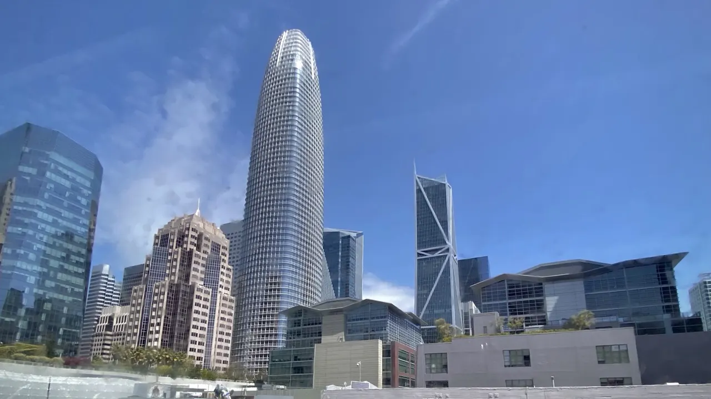

인공지능 에이전트라는 말이 투자 시장에서 자주 보이지만, 기업의 숫자는 데모 화면보다 훨씬 느리게 움직입니다. 고객 상담을 대신하고, 영업 기록을 정리하고, 사내 승인 흐름을 처리하는 장면은 멋지지만, 그 기능이 실제 예산으로 남으려면 더 까다로운 조건을 지나야 합니다. 직원이 매일 쓰는 화면 안에 들어가야 하고, 보안팀이 허락해야 하며, 관리자는 책임 소재와 감사 기록을 확인할 수 있어야 합니다.
그래서 인공지능 에이전트 투자는 모델이 얼마나 똑똑한지보다 업무가 얼마나 오래 붙잡히는지를 먼저 봐야 합니다. 같은 질문에 답하는 챗봇은 금방 비교됩니다. 반대로 고객 이력, 권한, 문서, 승인 규칙, 결제 흐름까지 이어지는 에이전트는 교체 비용이 커집니다. 이 차이가 유료 좌석 확장, 사용량 기반 매출, 갱신율의 차이로 이어집니다.
2026년의 기업용 인공지능 시장은 이미 “가능성” 단계만으로 설명하기 어렵습니다. 마이크로소프트의 2026 회계연도 3분기 발표는 AI 사업의 연간 매출 run rate가 370억 달러를 넘어섰다고 설명했고, 세일즈포스의 2027 회계연도 1분기 발표는 Agentforce ARR이 10억 달러를 넘었다고 밝혔습니다. 서비스나우의 2026년 1분기 발표는 Now Assist 대형 고객 증가를 강조했고, 알파벳은 구글 클라우드 넥스트 2026에서 기업용 제미나이와 에이전트 생태계를 계속 넓히고 있습니다. 여기서 핵심은 누가 더 큰 발표를 했느냐가 아니라 누가 돈을 받는 위치에 더 가깝게 서 있느냐입니다.
데모는 왜 매출이 아닌가

에이전트 데모가 매력적인 이유는 사용자가 명령을 내리면 여러 단계를 알아서 처리하는 것처럼 보이기 때문입니다. 하지만 기업 고객은 “잘 대답하는가”보다 “실수했을 때 누가 책임지는가”를 먼저 묻습니다. 고객 정보가 섞이면 안 되고, 권한 없는 결재가 나가면 안 되며, 규제 산업에서는 로그와 승인 기록이 남아야 합니다. 이 장벽을 넘지 못하면 데모는 마케팅 자료로 남고, 예산은 작은 실험비에서 멈춥니다.
투자자가 봐야 할 첫 번째 신호는 무료 체험이나 파일럿 수가 아니라 생산 환경 전환율입니다. 테스트 계정이 실제 부서 예산으로 바뀌고, 한 팀에서 여러 팀으로 번지고, 계약 갱신 때 AI 기능이 빠지지 않아야 합니다. 제품 설명보다 중요한 문장은 고객이 “이 기능이 없으면 업무가 느려진다”고 말하는 순간입니다. 그때부터 에이전트는 부가 기능이 아니라 업무 인프라가 됩니다.
마이크로소프트는 코파일럿과 에이전트를 오피스, 팀즈, 다이내믹스, 애저 흐름 안에 배치할 수 있습니다. 세일즈포스는 고객관계관리 데이터와 영업·서비스 기록을 붙잡고 있습니다. 서비스나우는 IT, 인사, 고객 서비스 워크플로를 오래 다뤄 온 회사입니다. 알파벳은 검색, 워크스페이스, 클라우드, 모델 생태계를 동시에 갖고 있습니다. 이 네 회사가 관련종목으로 묶이는 이유는 단순히 AI를 말해서가 아니라, 에이전트가 들어갈 업무 자리가 이미 있기 때문입니다.
좌석 확장은 어디서 생기나
관련 영상
ServiceNow Now Assist Agents 시작하기 영상
기업용 소프트웨어에서 가장 좋은 성장은 새 고객을 끝없이 사 오는 방식보다 기존 고객 안에서 쓰는 사람이 늘어나는 방식입니다. 에이전트도 마찬가지입니다. 처음에는 고객지원팀에서 문의 요약을 돕다가, 이후 영업팀의 다음 행동 추천, 재무팀의 청구 확인, IT팀의 장애 분류, 인사팀의 온보딩 안내로 번질 수 있습니다. 이 확장이 자연스럽게 일어나면 좌석 수와 모듈 수가 함께 늘어납니다.
마이크로소프트의 강점은 이미 직원들이 열어 두는 화면에 에이전트를 얹을 수 있다는 점입니다. 새 도구를 배우게 하는 부담이 작고, 기존 보안·관리 체계와 묶기 쉽습니다. 다만 이 장점은 가격 저항과도 연결됩니다. 고객이 오피스 구독료 위에 AI 비용을 추가로 낼 만큼 생산성이 분명해야 합니다. 코파일럿 매출은 좌석 수보다 실제 사용 시간이 더 중요한 이유가 여기에 있습니다.
세일즈포스는 에이전트포스를 통해 영업과 고객 서비스의 반복 작업을 겨냥합니다. 이 시장에서 좋은 신호는 “AI 기능을 샀다”가 아니라 영업 담당자의 입력 시간이 줄고, 고객 문의 처리 시간이 짧아지고, 기존 CRM 데이터가 더 자주 업데이트되는 모습입니다. CRM은 데이터가 비어 있으면 힘을 잃습니다. 에이전트가 데이터를 채우고, 그 데이터가 다시 추천 품질을 올리면 고객은 쉽게 떠나기 어렵습니다.
서비스나우는 업무 흐름 자체가 제품입니다. 장애 접수, 승인, 변경 관리, 직원 요청처럼 회사 안에서 매일 반복되는 일을 붙잡습니다. 에이전트가 여기서 의미를 가지려면 답변만 잘해서는 부족합니다. 티켓을 분류하고, 필요한 승인자를 찾고, 정책에 맞게 다음 단계를 넘기며, 예외 상황에서는 사람에게 돌려줘야 합니다. 이런 흐름이 쌓이면 에이전트는 좌석 판매보다 워크플로 소비량을 늘리는 역할을 합니다.
사용량 과금은 마진을 흔듭니다
에이전트 매출이 늘어도 곧바로 좋은 이익이 되는 것은 아닙니다. 답변을 만들 때마다 모델 호출 비용과 데이터 처리 비용이 생기고, 복잡한 업무일수록 여러 번의 추론이 필요합니다. 고객에게는 “자동화”로 보이지만 회사 입장에서는 토큰, 서버, 전력, 모델 라우팅, 보안 검토 비용이 붙습니다. 사용량이 늘수록 매출도 늘지만 원가도 같이 움직입니다.
그래서 2026년의 인공지능 소프트웨어 투자는 매출 성장률만 보면 위험합니다. 매출총이익률이 유지되는지, AI 기능을 고가 요금제로 묶을 수 있는지, 고객이 실제로 추가 비용을 받아들이는지 확인해야 합니다. 가격을 올리지 못한 채 사용량만 늘면 회사는 고객을 기쁘게 만들면서도 마진을 잃을 수 있습니다. 반대로 모델 선택과 캐싱, 업무별 저비용 모델 라우팅이 잘 되면 같은 사용량에서도 이익률을 지킬 수 있습니다.
알파벳은 이 지점에서 다른 종류의 장점을 가집니다. 자체 모델, 자체 클라우드, 검색과 워크스페이스의 배포면을 함께 갖고 있어 비용 구조를 내부에서 조정할 여지가 큽니다. 하지만 클라우드 점유율과 기업 영업에서는 마이크로소프트와 아마존의 압박을 계속 받습니다. 구글의 에이전트 전략을 볼 때는 모델 성능보다 기업 고객이 구글 클라우드 안에서 데이터를 옮기고 워크플로를 맡기는 속도를 봐야 합니다.
마진을 흔드는 또 다른 변수는 보안과 법무 비용입니다. 에이전트가 고객 메일, 계약서, 코드, 결제 데이터에 접근할수록 검토 범위가 커집니다. 대형 고객은 기능보다 통제권을 먼저 요구합니다. 이 요구를 제품 안에 잘 녹인 회사는 더 비싼 요금을 받을 수 있지만, 그렇지 못한 회사는 실험 단계에서 오래 머물 가능성이 큽니다.
투자자는 어떤 숫자를 봐야 하나
인공지능 에이전트 투자는 네 가지 숫자로 좁혀 볼 수 있습니다. 첫째, AI 기능이 붙은 유료 좌석 수입니다. 둘째, 기존 고객 안에서 AI 모듈을 추가로 쓰는 비율입니다. 셋째, AI 사용량이 늘어도 매출총이익률이 버티는지입니다. 넷째, 갱신 시점에 고객이 AI 기능을 유지하거나 확대하는지입니다. 이 네 가지가 같이 움직이면 데모가 매출로 바뀌고 있다는 뜻입니다.
마이크로소프트는 코파일럿 좌석과 애저 사용량의 질을 함께 봐야 합니다. 세일즈포스는 에이전트포스가 기존 CRM 고객의 계약 규모를 키우는지, 서비스나우는 업무 자동화와 Now Assist가 대형 계약의 ACV를 끌어올리는지 확인해야 합니다. 알파벳은 제미나이와 구글 클라우드의 기업 채택이 검색 광고 중심의 이익 구조를 보완할 만큼 커지는지 봐야 합니다.
여기서 조심할 부분은 “AI를 많이 쓰는 회사가 무조건 좋은 투자처”라는 단순화입니다. AI 기능을 많이 넣어도 고객이 돈을 더 내지 않으면 비용만 늘 수 있습니다. 반대로 말수가 적은 회사라도 기존 업무 흐름에 깊게 들어가 있고, 고객이 해지하기 어려우며, 가격을 올릴 근거가 있으면 더 안정적인 수익을 만들 수 있습니다.
실적 발표에서는 AI 관련 표현보다 계약 잔고, 잔여 수행의무, 순매출 유지율, 매출총이익률, 영업현금흐름을 먼저 보는 편이 좋습니다. 발표 자료에서 “고객이 늘었다”는 문장이 나오면 그 고객이 무료 실험인지, 유료 좌석인지, 기존 계약의 추가 모듈인지 나눠야 합니다. 같은 고객 수 증가라도 현금흐름에 닿는 거리는 다릅니다.
결국 인공지능 에이전트의 가치는 사람처럼 말하는 능력보다 회사 안에서 반복되는 일을 조용히 줄이는 능력에서 나옵니다. 투자자는 더 화려한 시연을 찾기보다, 고객이 매일 쓰는 업무 화면 안에서 에이전트가 자리를 차지하고 있는지 확인해야 합니다. 데모는 기대를 만들고, 유지율과 좌석 확장은 실적을 만듭니다.
이 글은 특정 종목의 매수나 매도 추천이 아닙니다. 투자 판단 전에는 각 회사의 최신 실적 발표, 공시, 제품 가격 정책, 고객 채택 지표를 함께 확인해 주세요.